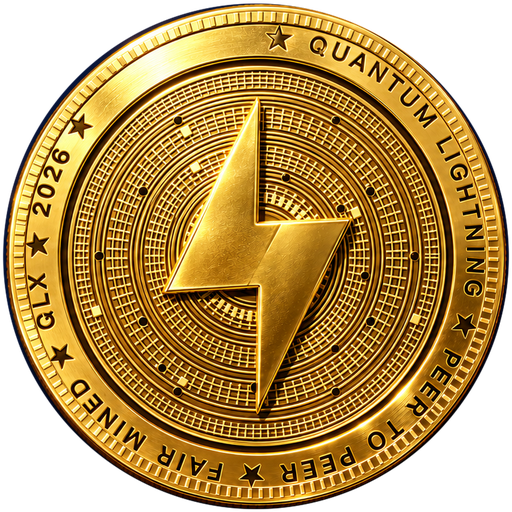
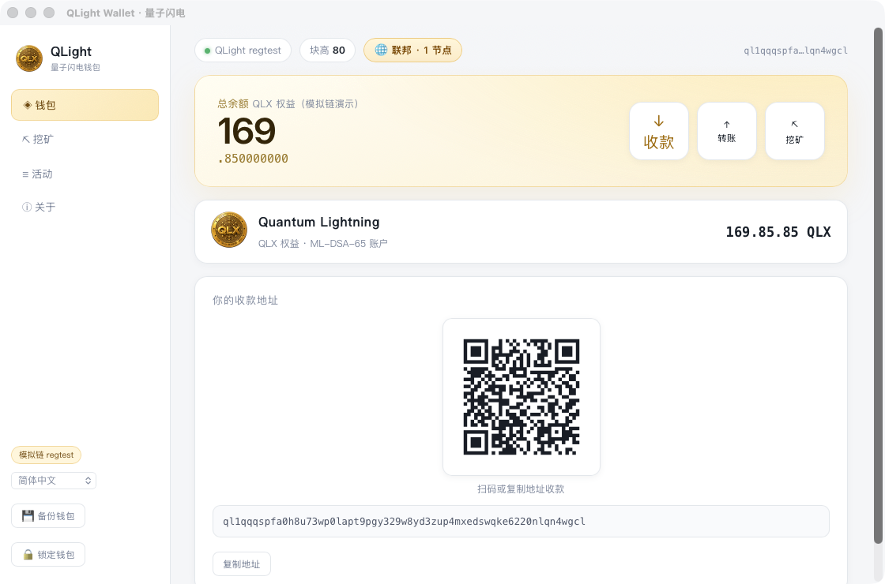
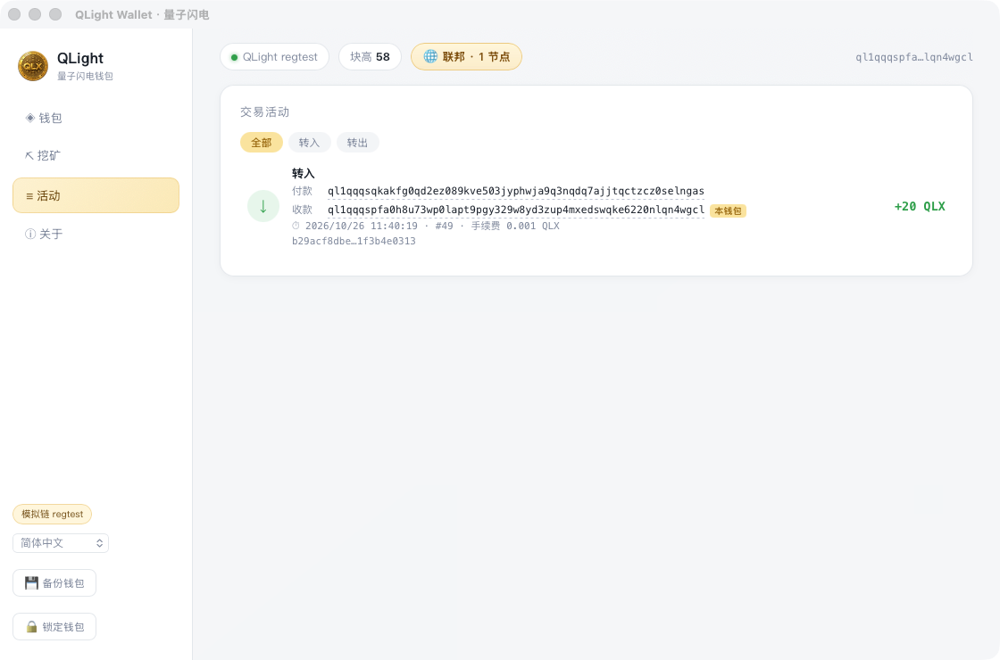
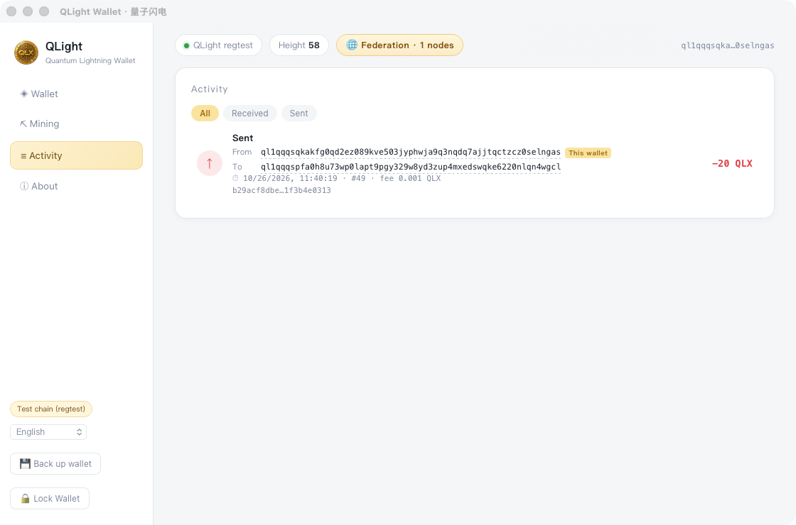

下一代抗量子桌面钱包。ML-DSA-65（FIPS 204）后量子签名 · 联邦网络 · 公平启动挖矿。
免安装绿色版 · 数据本地加密存储 · 无需注册任何账号
真实运行截图 · 同一笔联邦转账的两端视角。



在量子计算机成熟之前，把钱包的锁先换掉。
全部交易使用 ML-DSA-65（NIST FIPS 204，Dilithium 家族）签名。今天截获的交易数据，未来量子计算机也无法伪造。
libp2p + mDNS + gossipsub。同一局域网的钱包自动发现彼此，无需服务器，无需公网 IP，账本全网一致。
QLX 全部通过挖矿产出：无预挖、无 ICO、无投资人份额。总量封顶 2.1 亿，约 31.5M 块减半一次。
密钥库以 AES-GCM + Argon2 加密落盘，账本与块文件全路径原子写入，启动时自动哈希链校验。
借鉴比特币创世块：宣言原文嵌入创世哈希，改一个字全网即可识破——链的价值观从第 0 块起被锚死。
出块周期 2 秒，手续费固定 0.001 QLX。转账签名后确认中状态一目了然，入块即到账。
The Genesis Manifesto —— 像 2009 年比特币嵌入报纸标题一样，嵌入创世哈希。
宣言经 SHAKE-256 摘要后嵌入创世块的 tx_root，随哈希链永久锚定——任何人可用宣言原文重算创世哈希并比对源码中的硬编码值。 宣言即信任根：篡改宣言 = 更换整条链。
「世界是被数学算出来、被数据渲染出来的」——这句话在这里不是文案，是可运行、可对拍、可证伪的实验。
world = render(种子, 规则, 历史)
它与区块链的状态转移 state(n+1) = f(state(n), tx(n)) 是同一个数学对象，不是类比。
链就是世界的存档：大地只由创世哈希决定，地表才混入全部块 VRF，历史 = 你挖出的每一个块。
山的位置永远不动，植被与地貌随链生长——地面若每出一个块就漂移一次，
(x, z, layer) 就不再是可验证的承诺，签了名的塔会被埋进地里。
转账不是在给某个外部游戏充能——转账就是在改变地貌。本页默认大陆指纹 bb95cc46d3bc8f90，与仓库里 Python 参考实现逐位一致：两种完全不同的运行时，同一片大陆。 确定性不是运气，是纪律（纯整数、只用 2 的幂、禁平台数学库）。
链上没有查询者，只有交易。所以"看见"被写成一条永久记账的指认：A 声明"我在块高 H 见过 B"， B 与任何第三方都能独立验证。存在不是被探测出来的，是被互相指认出来的。 实体 id 由创建它的那笔交易内容寻址——无注册机构、无命名空间仲裁、无白名单。
自由 ≠ 免维护：建造免费签名落账，持续存在最终要付租（路线图），断租不删除、只把归属置空。 自由 ≠ 无限：当前 32 笔/秒，必须走 chunk 粒度承诺。 币不是计时器印的：只有真的在世界里挖到矿、凭据进了下一个块，才发行新币；没挖到就零发行。 可见 ≠ 可读：链证明归属与状态，证明不了画面好不好看——渲染器不是共识的一部分。
点「篡改规则常量 +1」：一个常量之差，整片大陆面目全非，指纹从 bb95cc46d3bc8f90 跳到 f4f3ee18cd05b9d2，而 Python 与本页同时跳——这就是规则集必须版本化、并与创世绑定的原因。 而且这不只是网页演示：桌面钱包的 🌍 世界页就是编辑器——16 种像素物件（石头/橡树/花丛/木屋/木桥/灯塔/篝火/篱笆/鹿/鸟/鱼/蝴蝶/兔/绵羊/旅人/狼） 贯穿俯视图、物品栏、手持与第一人称世界；600 块一昼夜，有日月星、雾、放置粒子与脚步音效。第一人称的画面上还叠了一层 Three.js 只做美术（光照、阴影、雾、远山与城堡地标），它不产出一条账本记录，WebGL 不可用就整层隐藏、玩法与收益一分不变——渲染器不是共识的一部分，这句话在这里是代码，不是口号。进世界先铺这张黄昏封面，第一帧渲染好再淡出，出生点按"近处有落差、远处有景、看得到水面、不站树里不贴墙"打分挑出来：第一眼就是封面里的那片地。 建造不收费，但要材料：签名即落账、不付币、不等确认，材料从世界里挖。 地形能挖：对准露出来的顶面按左键就剥掉一层，泥土 / 石头 / 矿按深度分层进材料账——挖是一条 op=dig 记录，哪一层由「地表层 − 已挖层数」算出，客户端说了不算，跳层、水面与岩床下挖都会被拒。 想拿币就去世界里挖矿：在矿脉里落一格并提交凭据，下一个块收下才发行新币。发行按节奏档结算——每笔最多结清一个当前档位（新钥匙 50 块，随本地址矿格数降到 10 块），空块不补发，等得再久也不会把中间空档一次性印出来——币是挖出来的，不是计时器印的。 每一次编辑都是一条 ML-DSA-65 记录，永久进账本，任何第三方重放 entities.jsonl 都能复算出同一个世界。 世界里采到的光尘同样是一条签名账（QL-DUST-v1）：资源按 600 块一轮重新长出来，第 400 块起入夜产出减半，每人每轮 60 格配额；光尘与 QLX 之间有恒定乘积兑换池，曲线在共识里算，不是前端估的。关键是轮次、配额、夜间只认真正收下这条记录的那个块高——自报的块高一律不作数，所以"回拨历史轮次把配额刷 N 遍""挑一个白天躲掉减半"这类脚本路子在判据上就不成立。 链只保存坐标与归属，像素仍然在每台本机各自算出来。 第一次打开不掉进参数里：欢迎页只问「去世界还是建钱包」，技术参数收进「高级」；进世界有 4 步清单，其中「挖掉一层」「放下第一个方块」两步以账本重放为准，进过世界、看过活动只是导航状态。 「关于」页有本地反馈导出（默认不带私钥 / 地址 / 截图）与联机三态说明——本地与局域网可用，公网仍未实现；第一人称里的「📷 截图」把画面与坐标一起导出，HUD 上那行在场只显示谁此刻在哪，不进账本、不换收益。 完整规格见 DESIGN.md §9， 参考实现见 tools/world/ （本渲染器 world.js 全文可读，约 180 行，无依赖）。
两台电脑连同一 Wi-Fi，各自打开钱包，即自动组网。
下载 .dmg → 拖入「应用程序」→ 打开。
首次打开若提示「无法验证开发者」：右键 → 打开（未做公证的普通提示，仅一次）。
下载 .zip → 解压 → 双击 qlight-wallet.exe（三个文件须同目录，包内 README.txt 讲清了建造与挖矿）。
SmartScreen 弹窗：更多信息 → 仍要运行；防火墙询问联网时选允许。
版本要求：本版起块格式为 v5（QL-BLOCK-V6：新币只在本机于世界里真的挖到矿、凭据进块后才按节奏档发行，空块不补发；块行另带光尘原件，由 dust_root + dust_count 锚定，见 DESIGN §9.13 / §9.16 / §9.17）。 块高超过 200 之后只认 v5——这是一次硬分叉，组网演示请两端使用同一发行包。0.4.1 起钱包顶部的网络条会替你把分歧说出口：邻居的规则指纹与本机不同报红「规则分歧」，指纹相同但发行包不同报金虚线「版本不齐」（同一规则家族里改过判据也一样会分叉）。分叉本身是静默的——连接层与日志都不报任何异常，这条提示是目前唯一看得见的地方（DESIGN §9.18）。